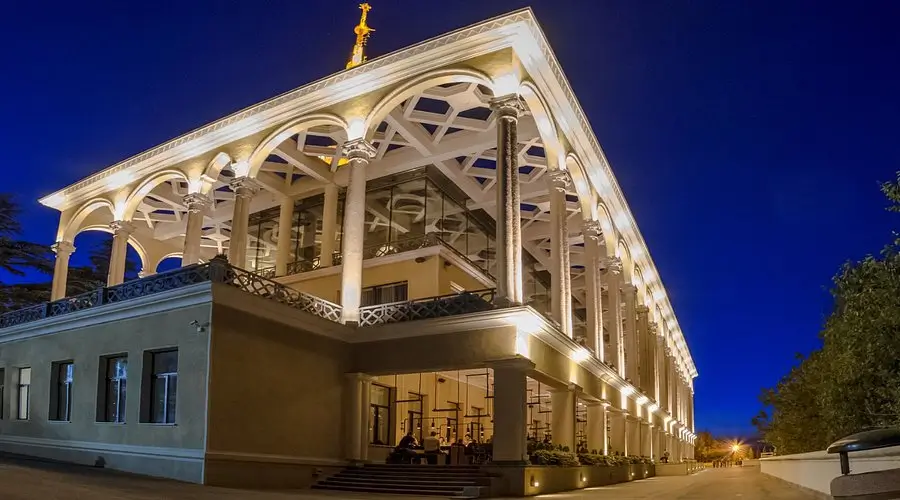
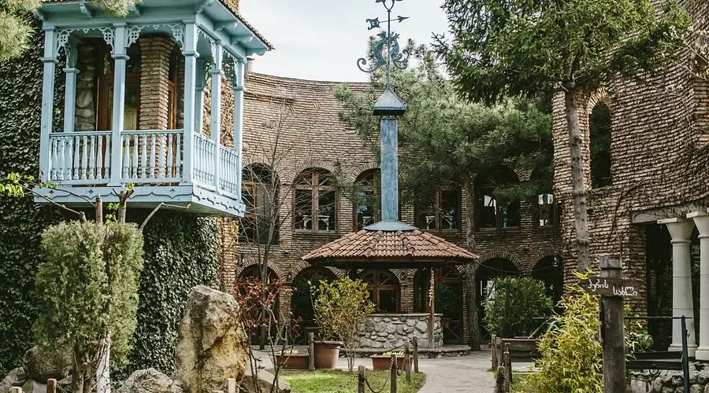
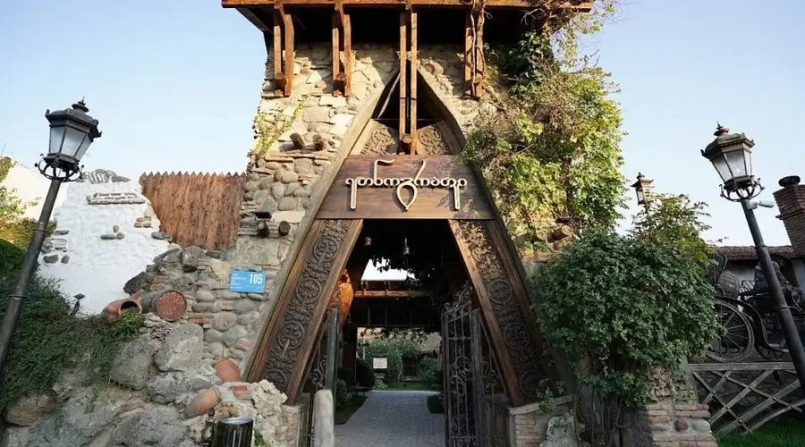

რესტორანი
ფუნიკულიორი

https://www.instagram.com/funicular_restaurant/მისამართი: ქ. კაკაცუ ჩოლოყაშვილი, 9
ფუნიკულიორის სარესტორნო კომპლექსი თბილისში არის ერთ-ერთი ყველაზე ცნობილი და საყვარელი ადგილი ქალაქში, რომელიც აერთიანებს არა მხოლოდ მაღალი კლასის სამზარეულოს, არამედ დედაქალაქის ბრწყინვალე ხედებს. ეს კომპლექსი მდებარეობს მთაწმინდის მწვერვალზე და მოიცავს რამდენიმე დაწესებულებას, რომელთაგან თითოეული უნიკალურია თავისი სტილითა და ატმოსფეროთი.ერთ-ერთი მთავარი დაწესებულებაა რესტორანი ფუნიკულიორი, რომელიც მდებარეობს კომპლექსის მეორე სართულზე. ეს დაწესებულება იდეალურია უფრო დახვეწილი და მშვიდი შეხვედრებისთვის, იქნება ეს პატარა ბანკეტი თუ კამერული ღონისძიება. რესტორანი გთავაზობთ როგორც ქართულ, ასევე ევროპულ კერძებს.გარდა ამისა, კომპლექსის პირველ სართულზე ფუნქციონირებს საცხობი "პური გულიანი", სადაც აცხობენ ლეგენდარულ აჭარულ ხაჭაპურს და უგემრიელეს პონჩიკს - კლასიკურ ქართულ ქუჩის საჭმელს, რომელიც არცერთ სტუმარს არ დატოვებს გულგრილს.მათთვის, ვინც ეძებს უფრო თავისუფალ ატმოსფეროს, მეორე სართულზე არის ლაუნჯ-ბარი, სადაც შეგიძლიათ მიირთვათ კოქტეილები და სასმელები და დატკბეთ თბილისის პანორამული ხედებით. ხოლო თუ დიდ ზეიმს გეგმავთ, კომპლექსის მესამე სართულზე ფართო საბანკეტო დარბაზი გელით. ეს ადგილი იდეალურია 400-მდე ადამიანის ღონისძიებებისთვის.
წისქვილი

https://tsiskvili.ge/მისამართი: ბელიაშვილის ქ. 99
რესტორანი „წისქვილი“ არ არის მხოლოდ ადგილი, სადაც გემრიელად მიირთმევთ, არამედ ნამდვილი კულტურული მარგალიტია, რომელიც სტუმრებს ქართული ტრადიციებისა და სტუმართმოყვარეობის ატმოსფეროში ჩაძირავს. ეს რესტორანი უკვე ორი ათწლეულია რაც ხვდება სტუმრებს და სთავაზობს არა მხოლოდ გამორჩეულ ქართულ სამზარეულოს, არამედ უნიკალურ სერვისსაც. წისქვილში შეგიძლიათ დააგემოვნოთ საქართველოს ავთენტური გემოები, თითოეული კერძი პროდუქციის ხარისხსა და ტრადიციებზე განსაკუთრებული ყურადღებით არის მომზადებული.რესტორნის ინტერიერი ეთნიკურ მუზეუმს წააგავს: აქ შეგიძლიათ ნახოთ ტრადიციული ქართული ნივთები, ხალხური ხელოვნების ელემენტები და დეკორი, რომელიც ამ ადგილს განსაკუთრებულ ატმოსფეროს ანიჭებს.ყოველ საღამოს წისქვილი მასპინძლობს საინტერესო კულტურულ პროგრამას, სადაც სტუმრებს შეუძლიათ დატკბნენ ქართული ცეკვებითა და ხალხური სიმღერებით.
ეთნოგრაფი

https://www.instagram.com/ethnographer_/მისამართი: ქ. ბელიაშვილის, 105
რესტორანი ეთნოგრაფი თბილისში ნამდვილი აღმოჩენაა მათთვის, ვისაც სურს სრულად ჩაიძიროს საქართველოს ატმოსფეროში და განიცადოს ადგილობრივი სამზარეულოს ავთენტური გემო. ეს დაწესებულება არ არის მხოლოდ ლანჩისა და ვახშამის ადგილი - ის თავის სტუმრებს სთავაზობს სრულ კულტურულ გამოცდილებას, რომელიც ასახავს საქართველოს მდიდარ ისტორიასა და ტრადიციებს.მის კონცეფციაზე თავად რესტორნის სახელწოდება მეტყველებს: „ეთნოგრაფი“ ცდილობს იყოს არა მხოლოდ რესტორანი, არამედ ნამდვილი ეთნოგრაფიული ცენტრი. ყოველი დეტალი, იქნება ეს ავეჯი, ჭურჭელი თუ კედლის დეკორაციები, გვახსენებს, რომ საქართველო მდიდარია ისტორიით და უნიკალური ტრადიციების მქონე ქვეყანაა.რესტორან ეთნოგრაფის მენიუ შედგება ექსკლუზიურად ადგილობრივი, ახალი ინგრედიენტებით მომზადებული ტრადიციული ქართული კერძებისგან. აქ შეგიძლიათ გასინჯოთ ყველაფერი, რაც ასე დამახასიათებელია ქართული სამზარეულოსთვის: ხინკალიდან და ხაჭაპურიდან დაწყებული ხორცისა და ბოსტნეულის მრავალფეროვანი კერძებით დამთავრებული. განსაკუთრებით აღსანიშნავია ღვინოზე აქცენტი - რესტორანში შესანიშნავი ღვინოა.